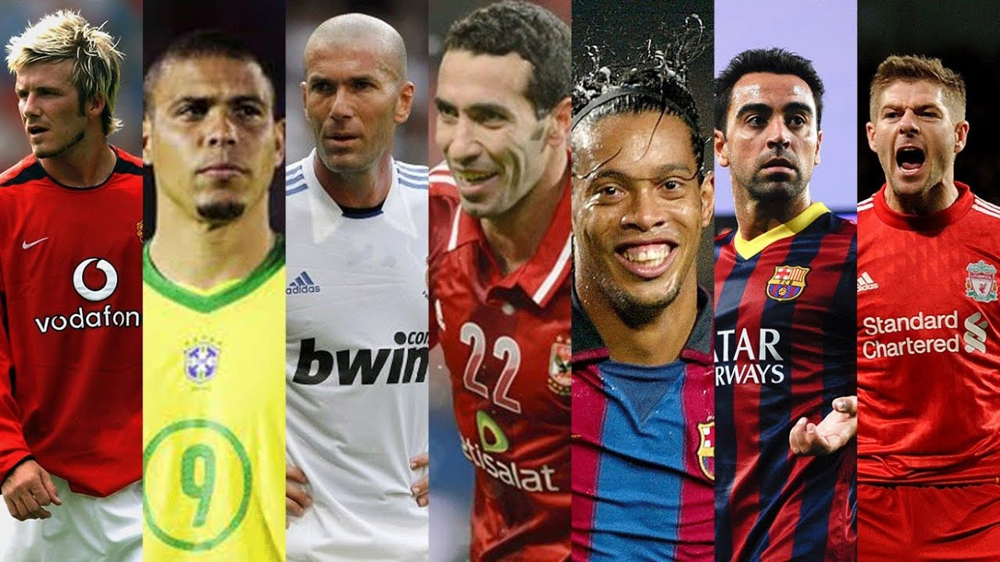

Welcome to the Football Legends App. An App designed to browse and view some of history's greatest players of the beautiful game. Click the button to view the Legends!
Welcome to the Football Legends App. An App designed to browse and view some of history's greatest players of the beautiful game. Click the button to view the Legends!
Legends App - 4th Year API RESTful Web Service
EAD2-CA2 [Elapsed] Lecturer: Gary Clynch
Developers: Bren Dempsey & Alex Grant
©2019 Dempsey & Grant